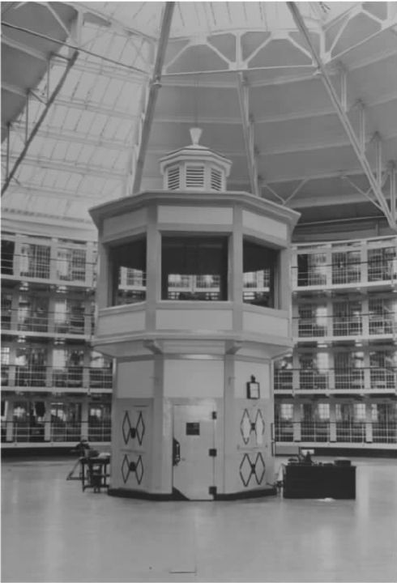
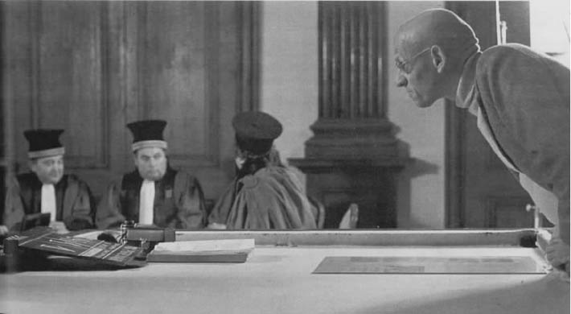

1757年1月5日，四十二岁的罗贝尔·达米安突然手执尖刀冲向国王路易十五并刺伤了他。达米安曾在法国部队中服役。他被捕的时候毫不反抗，声称只是想吓唬一下国王，并不想杀他。但达米安还是被定了弑君罪（实即弑父罪，因为国王通常被视为臣民的父亲），不到两个月后就被处决了。处决是公开进行的，场面残忍，吸引了大量的围观者。福柯在《规训与惩罚》开篇引用当时一位目击者的记述，再现了酷刑的细节，包括达米安如何被四马分尸。写完这次场面可怖的行刑之后，福柯未作只字评论即转向另一份大约八十年后出现的文献，一份1837年巴黎少年犯监管所的规章。该规章写道：“犯人的作息日冬天从早上六点开始，夏天从早上五点开始。终年每天劳动九小时，学习两小时。作息日冬天至晚上九点结束，夏天至晚上八点结束。”（《规训与惩罚》，第6页）引述了这条规定和另外十一条类似的规定之后，福柯终于评论了一句：“我们看到了一次公开行刑和一份作息时间表。”（《规训与惩罚》，第7页）
这里出现了两种范例性的惩罚模式：第一个例子发生于启蒙运动后期，虽遭到相当多的批评，但它是18世纪中期之前欧洲惩罚囚犯的典型方式；第二个例子代表了一种新的、比较“温和”的惩罚方式，看似一种更加文明、更为人道的惩罚思路的产物。在福柯的论述中，第二种惩罚理念最终促成了他称之为“规训”的现代惩罚系统的完善。
那么，是否这一新的理念——笼统而言，就是以人身监禁代替肉体折磨的惩罚方式——就像它所表现出来的那般开化、进步？对此，福柯表示怀疑，认为关键之处“不在于减轻惩罚，而在于更好地惩罚”（《规训与惩罚》，第82页）。
福柯先将现代时期和前现代时期的惩罚思路作了比较，列举出四个大的转变：
1.惩罚不再是一种公开表演或者景观，不再是君主不容违背的不可抗力的展示，而变成一种为了维持公共秩序而不得不实施的分散的、几乎令人难堪的限制行为。
2.惩罚所针对的不再是犯人所犯的罪行，而是犯人本身；法律所关注的与其说是罪犯做过什么，倒不如说是导致他们这样做的因素（环境、遗传、父母的行为等）。
3.那些依法量刑的法官们在决定惩罚的性质和期限上不再起决定性作用，取而代之的是各种“专家”（病理学家、社会工作者、假释委员会），由这些专家来决定如何判刑、如何具体实施刑罚。
4.惩罚机制所宣称的目的不再是报复（无论是为了警示他人还是为了纯粹的正义），而是使罪犯接受改造、重新做人。
福柯并不否认废止肢解罪犯尸体的刑罚是一种进步。但是，这种“更加温和”的方式暗含了更加阴暗的一面，即一种全面控制的强烈意图。在一定层面上，这种阴暗面表现为从野蛮但分散的肉体惩罚转向减少疼痛但更具侵犯性的心理控制。前现代的惩罚粗暴地折磨罪犯的身体，但满足于通过痛感来实行报复；现代的惩罚要求罪犯发生内在的转变，要求其内心皈依于一种新的生活方式。但现代刑罚对心灵的控制本身就是一种更加隐晦却更为彻底的身体控制，因为改变心理态度和倾向的目的就在于控制身体的行为。用福柯的话来说，在现代时期，“心灵是身体的牢笼”（《规训与惩罚》，第30页）。
《规训与惩罚》最引人注目的论题是，原本用来约束罪犯的训诫手段已成为其他现代控制场所（学校、医院、工厂，等等）的范式，导致整个社会弥漫着狱规的力量。福柯说，我们生活在一个“监狱群岛”上。
例如，我们可以在新式的军事训练中发现现代规训控制体系的突出特点。这种训练的目的是使普通人愿意而且能够去杀敌。在前现代时期，练兵重在发现适合这种任务的对象——那些孔武有力、体格健壮又胆量过人的人，然后利用荣誉和恐惧的法则对他们进行普遍动员。与此不同，现代的士兵是经由高强度的专门训练造就的。尽管他们起初可能并不特别适合军事生涯，新兵讯练营却使他们“成为”士兵。与模特儿或者演员这些要靠天生吸引力的职业不同，当兵的关键不在于看上去像个士兵，而在于确实去“做”一名士兵——这就需要进行系统的训练。
纪律训练的鲜明特点在于，首先，它的实现途径不是通过对整个身体的直接控制，而是通过对身体特定部位的细部控制。如果想教会士兵如何使用步枪，我们会把整个过程分解成几个有序的精确步骤。只把整个过程演示给他们看然后告诉他们“就照这样做”，这显然是不行的。训练的核心不仅在于达到目标，确保士兵会以这样或那样的方式做我们想让他们做的；关键在于，还要通过一套特定的程序来实现训练的目标。我们不仅希望你能对敌人开枪；我们还要求你这样握枪并举与肩平，这样瞄准，这样扣动扳机。一句话，这是一种微观管理。福柯对现代的规训体制作了总结，认为其目的是制造“驯顺的肉体”，那些肉体不仅会做我们让他们做的，而且以我们希望的方式去做（《规训与惩罚》，第138页）。
“驯顺的肉体”通常是三种典型现代规训方式的产物。其中，层级监视 的方式建基于这样一个显见的事实，即我们能够仅仅通过监视来控制人们的行为。城墙上的瞭望台就是一个很好的例子。现代权力体系将监视的技巧提升到了新的高度。过去，建筑物往往是当权者特权地位的表现，突出他们身份的高贵（“宫殿的华丽”），或是提供给他们一个监视下属和敌人的有利位置（“堡垒的构造”）（《规训与惩罚》，第172页）。现代的建筑结构满足普通人对建筑的功能性需要，与此同时，现代的建筑设计“使建筑物里的人清晰可见”。例如，报告厅中阶梯式排列的座位，那些有大窗户和宽走廊、光线充足的教室，这些设施在促进求知的同时，也使得教师们很容易看到教室里每个人的一举一动。类似的监视技巧也被用在医院的病房、军营以及工厂的工作间里，它们都是实例，表明“一个建筑物应该能够改造人：对居住其中的人产生影响，便于控制他们的行为，……有助于了解他们，改变他们”（《规训与惩罚》，第172页）。
对福柯而言，现代规训权力最理想的建筑形式是杰里米·边沁的全景敞视监狱，该建筑的设计理念是用最少的人力实现对犯人最大限度的控制。尽管接近这种构想的监狱直到20世纪才最终出现，这种控制理念在现代社会已经逐步盛行起来。

图11 全景敞视监狱造型，伊利诺伊州立监狱，1954年
在这样的监狱里，每个犯人住在单独的一个囚室内，囚犯互相隔离，互相看不到对方。这些囚室环绕一个中心塔楼而建，塔楼中的监控者可以随时监视囚室内的情景。这里，控制的实现依靠的不是监视这一事实而是监视的可能性。事实上，监视者只会偶尔向某一间囚室看去，但住在囚室中的犯人不知道这种“偶尔”何时发生，所以必须假设自己总是在被监视。其结果是，我们“在被囚者身上造就了一种有意识的状态和持久的可见性，从而确保权力机制的自动运行”（《规训与惩罚》，第201页）。
现代规训控制的另一个鲜明特征是对规范化评判 的兴趣。评判个人的标准不是他们行为本质上的正误，而是这些行为使他们在一个分等级的序列上处于什么位置，这个序列可以用来把个人和所有其他人进行比较。孩子们不能只是学会阅读，还要保证处在他们阅读小组的前五十名。一家餐馆只提供美食是不够的，它必须成为全城十个最好的餐饮场所之一。规范化的概念渗透到我们社会生活的方方面面。从正式层面上讲，我们为教育计划、医疗活动以及工业程序和产品制定了全国统一的标准；在非正式的意义上，我们总喜欢把从旅游景点到我们的体重甚至是性生活质量等各种事物按等级顺序列一个清单。
规范化评判是一种极具普遍性的控制方式。没有人能够逃避这种评判，因为无论你的成就有多高，评价的尺度都告诉你还有可能存在更高水平的成就。此外，所谓的“规范”把一些行为界定为“不正常”，由此将这些行为置于社会（甚至人类）所能接受的范围之外，尽管它们远非提倡前现代式暴力权力的公然越界行为。被评判为不正常的恐惧时刻约束着我们这些现代人。

图12 福柯和演员们在电影《我，皮埃尔·里维尔》的拍摄现场
最后，审查把层级监视和规范化评判的技术合二为一。福柯说，这是“一种规范化的目光，它建立了个人的可视性，以此实现对个人的区别和评判”。作为现代权力/知识的重要作用场域，审查把“力量的部署和真理的确立”（《规训与惩罚》，第184页）融为一体。一方面，审查可以得出关于被审查者（包括病人、学生、求职者）的实情，同时，通过在审查中建立的规范可以控制被审查者的行为。
审查这种规训方式同时暴露了个人在现代权力/知识的网域中的新式地位。它将个人置于一个“书写的网络”中（《规训与惩罚》，第189页）。每项审查的结果都被记录成文，这些文献提供了关于被审查的个人的详细信息，由此允许权力机制实现对个人的控制（例如学校的缺勤记录、医院中病人的病历）。基于这些记录，掌权者可以确立类别、平均水平以及规范，为知识的产生打下基础。审查把个人变成了“实例”——体现了该词的两种意义：科学例证，同时又是关注的对象（当然，对福柯而言，关注即意味着控制）。这个过程也颠倒了可视性的两极。在前现代时期，权力的实施本身具有高度的能见性（如城镇中的驻军、公开行刑），那些认知的对象则隐身在暗处。然而，在现代社会，权力运作通常是不可见的，对目标的控制则通过使它们高度可见得以实现。现在，具有最高可见性的是那些厚厚的卷宗被保存并由大批匿名、不可见的公务人员审阅的人（罪犯、疯癫者）。
在某种层面上，《规训与惩罚》对于囚犯的意义相当于《疯癫史》对于疯癫者的意义。该书剖析了我们对边缘化群体采取的所谓人道主义措施，展示了这些举措独特的支配方式。和《疯癫史》不同的是，这本书的分析集中在对体制结构而非思想体系的追根溯源；这就是说，与其说它是考古学研究，倒不如说它是一项系谱学研究。但这一区别只是着重点方面的，因为我们看到，《规训与惩罚》的系谱其实建基于对监狱这一概念的考古学认识之上，而《疯癫史》也非常关注我们关于疯癫之认识的制度化后果。
《规训与惩罚》和福柯此前作品的最大不同之处在于，福柯在此书中提出监狱模式已经转移、渗入了现代社会的各个方面。因此，这本书不像《疯癫史》那样以一个我们（正常的社会）借以定义自己身份的具体的他者人群为关注中心。在这里，社会本身看似由众多受支配的他者组成，这其中不仅包括罪犯，也包括学生、病人、工厂工人、士兵以及购物者等等。我们每个人都以各种方式成为现代权力作用的对象。相应地，现代社会不存在单个的权力中心，也没有一个例外的“我们”作为定义边缘化的“他们”的标准。权力分散在社会各处，形成大量的微观中心。这种分散对应于权力演化的背后不存在任何目的论（没有统治阶级，没有所谓的世界历史进程）这一事实。现代权力是众多微小的、无组织的动因以系谱学的方式产生的偶然结果。
福柯所呈现的现代权力图景挑战了大多数革命运动，尤其是马克思主义运动的前提。这些运动通常把特定的群体和机构（如资产阶级、中央银行、军事高级指挥部、官方新闻媒体）作为控制的源头，声称对它们的破坏或改造能够带来解放。在前现代时代，权力被高度集中在宫廷和几个相关的机构手中，这样的革命运动能够取得胜利。那些马克思主义者就像是为一场逝去的战争制定作战计划的军事战略家；他们以法国大革命为榜样，试图在一个国王已经不存在的世界里砍掉国王的头。即使革命者占领了政府办公室、军事基地、官方报纸媒体，还是有不计其数的其他权力中心会抵制革命。福柯本人举了前苏联作为“经过易手的国家机器的例子，但这个国家机器控制之下的社会在等级、家庭生活、性和身体方面大抵和资本主义时代一样”（《权力/知识》，“地理学问题”，第73页）。革命所追求的根本性转变要求对国民生活的细枝末节进行集中控制。由此，我们看到了关于现代革命极权倾向的福柯式阐释。
这种分析似乎导致了一个极端保守的结论，即有意义的革命以及由此带来的真正的解放不可能存在：现代微观中心的权力网络唯一的替代方案就是极权统治。笔者认为，福柯应该会同意这是唯一可能的全球性替代模式。但是，福柯自己的结论不会是这种保守的绝望之声，而是对革命解放事业要求带来全球性变化这一假设的否定。对福柯而言，政治——甚至是革命的政治——总是地方性的。
然而，地方性经常会成为极端保守主义的避难所。尤其是考虑到福柯所说的压制的大众化——根据地方性的背景，我们都是受害者——他如何能避免把有效的革命运动消解于一系列永无休止的琐碎抗议之中？那些银行家、律师以及正教授们同样会抱怨自己受到了剥削（比如作为员工或者消费者），他们的抗议之声和其他人的同样合理正当。然而，福柯在此可以借助边缘的 这一概念，自20世纪70年代起，这个概念代替了视疯人为一种极端的他者的浪漫主义观念。和疯人不同，边缘化的群体或个人仍是现代社会名副其实的组成部分：他们说这个社会的语言（尽管可能带着口音），接受很多通行的社会价值观念，起到重要的社会和经济作用。与此同时，和我们绝大多数人不同的是，他们永远处在社会的边缘地带。这种处境是出于以下一到两个原因：界定他们生活的或许是和主流社会相左的价值观念（例如同性恋者、非正规宗教的信仰者、来自非西方文化传统的移民），或者他们从属的群体的利益被主流群体有组织地压制了（如流动务工者、贫民窟学校的孩子、沿街拉客的妓女、监狱里的囚犯）。
和疯人不同的是，被边缘化的个人或群体的价值观对我们自己的价值观提出了有力的挑战，而在我们的社会中满足他们的需求似乎也不为过。因此，他们关切的事可以成为有效的政治行动的焦点。同时，这样的政治行动很可能是没有乌托邦式全球目标的真正革命。对我们而言，要真心真意地和疯癫者口称“我们”，就要求摧毁我们核心的价值观念和社会体制，但边缘者的权利和要求建立于对我们社会某些特征所作批评的基础之上，我们的社会可以不被推翻而得到改良。
边缘者的政治本身似乎是另一种边缘化的手段，因为在这种政治中“我们”主张替“他们”说话的权利。福柯明显察觉到了这种危险，他坚持认为政治行动应该为边缘群体成员提供说话和被聆听的机会。因此，在20世纪70年代初，他和同伴丹尼尔·德斐尔一起建立了“监狱情报团体”（简称为GIP），利用福柯作为学术名流的地位吸引媒体对囚犯的关注，让他们有机会自己直接说话。
边缘性是认知学语境下“错误”的政治对应物，这一概念我们在前文谈到过。从政治的角度理解，错误当然不仅表示语言陈述的不实，还涵盖非语言学意义上的不适之举、导向错误的价值观念等意。笔者认为，福柯式的政治学就是努力使造成群体边缘化的“错误”和主流社会的“真理”进行创造性互动。倘若这种努力获得成功，这些边缘群体就不再是支配所指向的特定对象，而作为一个整体的社会本身也会因接受此前被拒斥为错误的事物而得到改造和丰富。
或许有人认为，我所说的“创造性互动”只是主流社会同化边缘群体的一个幌子，只会破坏他们最具特征的价值观念。但是，互动未必就会产生趋同式的同化，特别是如果在互动中边缘群体能获得被认真聆听的机会。另一方面，这里也会产生另一个问题，即是否值得或者在多大程度上值得与某一边缘群体进行互动。我们可能会认为某些边缘群体（如新纳粹主义或者一些天启式宗教流派）的需求和价值观念与我们的根本价值观念相冲突，我们对他们最多能做到容忍——这也是合情合理的。
最后，我们还面临这样一个难题：为什么我们的政治活动如此关注边缘群体？比方说，为什么不采取新保守主义的政策强化对主流价值观念的信奉，或者向别的社会推广我们的主流价值观念？对于与福柯一样认为自我批判和对他者的欣赏应该是我们的核心政治议题的自由主义者，这是一个关键问题。不幸的是，和约翰·罗尔斯这样的自由主义者不同，福柯对此鲜有回应。他自己的政治立场似乎只是源于他个人对不断的自我改造的倾心。他对边缘群体的关注也主要反映了他对困于某一固定身份的恐惧。在此，对福柯而言，政治从根本上是个人的。对于那些没有这种恐惧的人，福柯只能说——他曾在类似的语境下说过这句话——“我们来自不同的星球”（《快感的运用》，第7页）。